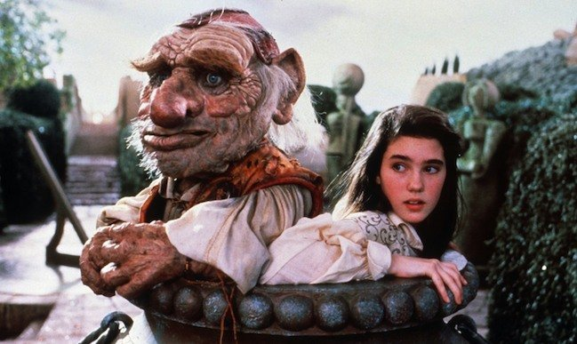
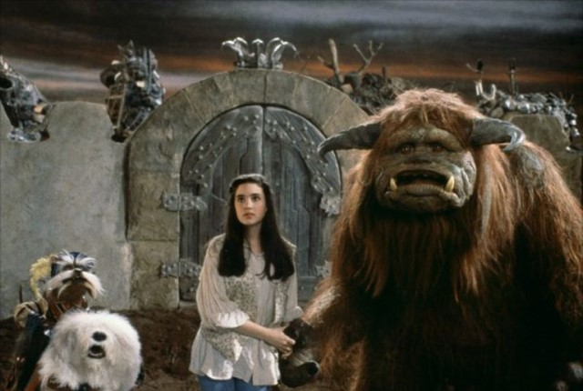

Nuevos Amigos al Rescate
Decidiste confiar en Hoggle, que al fin de cuentas, se encariñó contigo y decidió no temerle más a Jareth y ayudarte. Salen de las alcantarillas y retoman el camino al castillo.
Durante su recorrido, conocen nuevos amigos: un monstruo lanudo de nombre Ludo (que posee la habilidad de comunicarse con las rocas y piedras) y un singular y muy valiente caballero andante de largos bigotes que se presenta como Sir Didymus, y junto a este su fiel perro Ambrosius, quienes te ayudarán a lograr tu objetivo.
 Al final, te enfrentas con el rey y recuperas a tu medio hermano.